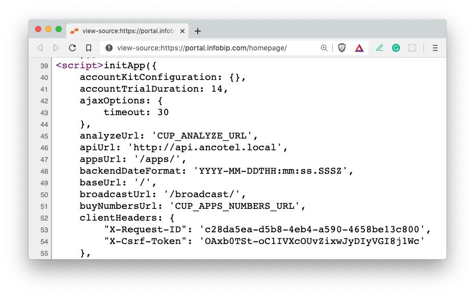
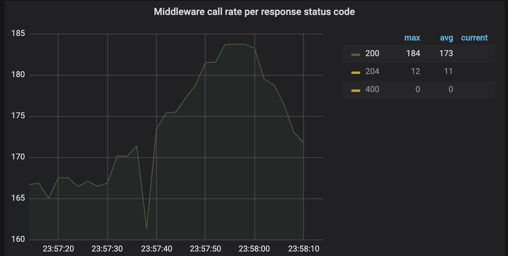

Alexey Zolotykh, TL of Sputnik team, Frontender, Speaker
Placeholders and URLs

'use strict'
// TODO: remove from production build package data
const pkg = require('../package')
const appPrefix = 'APP_URL_PREFIX' || pkg.prefix
const apiPrefix = ['/', appPrefix, '/api'].join('')
module.exports = {
log: {
name: pkg.name,
location: 'SERVICE_LOG_ROOT',
types: ['audit', 'error'],
graylogHost: 'GRAYLOG_HOST',
},
redis: {
port: REDIS_PORT,
host: 'REDIS_HOST',
options: {},
sentinel: CUP_REDIS_SENTINEL_ENABLED,
sentinelHosts: 'CUP_REDIS_SENTINEL_HOSTS',
masterName: 'CUP_REDIS_MASTER_NAME',
},
port: HTTP_PORT,
hostName: '0.0.0.0',
protocol: 'PROTOCOL',
prefix: 'APP_URL_PREFIX',
appId: APPLICATION_ID,
parsecoAuthAppId PARSECO_AUTH_APP_ID,
permissionApplicationId: PERMISSION_APPLICATION_ID,
remoteInvocationContextCredentials: 'REMOTE_INVOCATION_CONTEXT_CREDENTIALS',
featureApiIntegration: 'FEATURE_API_INTEGRATION',
segmentEnabled: CUP_SEGMENT_ENABLED,
segmentWriteKey: 'CUP_SEGMENT_WRITE_KEY',
authCookieReferrers: [CUP_AUTH_REFERRERS_LIST],
//= =================== SERVER SIDE CALLS ====================',
loginUrl: 'CUP_LOGIN_URL',
logoutUrl: 'CUP_LOGOUT_URL',
scUrl: 'CUP_SC_URL',
permUrl: 'SC_PERMISSIONS_URL',
permsUrl: 'CUP_GET_PERMISSIONS_URL', // permUrl config value will be removed soon
cupPermissionsUrl: 'CUP_PERMISSIONS_URL',
amsUrl: 'AMS_URL',
resolveUserUrl: 'CUP_RESOLVE_USER_URL',
resolveAccountUrl: 'CUP_RESOLVE_ACCOUNT_URL',
billingUrl: 'BILLING_URL',
internalIamUrl: 'INTERNAL_IAM_URL',
internalMessagingApiPath: 'CUP_INTERNAL_IAM4W_URL',
internalSettingsApiPath: 'INTERNAL_SETTINGS_API_URL',
timezoneServiceUrl: 'TIME_ZONES_SERVICE_URL',
domainAccessUrl: 'CUP_SC_DOMAIN_CHECK_URL',
campaignServiceUrl: 'CAMPAIGN_SERVICE_URL',
cupReportsServiceUrl: 'CUP_REPORTS_SERVICE_URL',
conversationServiceUrl: 'CUP_CONVERSATION_SERVICE_URL',
//= =================== AJAX CALLS ====================',
apiTimeout: AJAX_OPTIONS_TIMEOUT,
iamUrl: apiPrefix + '/iam',
internalIamProxiedUrl: apiPrefix + '/internalIam',
smsApiUrl: apiPrefix + '/sms',
subscribersApiPath: apiPrefix + '/subscribers',
settingsApiPath: apiPrefix + '/settings',
pushApiUrl: apiPrefix + '/push',
internalApiUrl: 'INTERNAL_API_URL',
apiUrl: 'https://oneapi.ioinfobip.com/portal',
// ===================== API PROXY =====================',
apiProxy: {
apiPrefix,
routes: [
{
name: 'iam api',
remote: 'IAM_URL',
local: 'iam',
},
{
name: 'settings api',
remote: 'CUP_SETTINGS_API_URL',
local: 'settings',
},
{
name: 'internal iam api',
remote: {
protocol: 'http',
hostname: 'INTERNAL_IAM_PROXIED_URL',
},
local: 'internalIam',
},
{
name: 'sms api',
remote: 'MESSAGING_API_URL',
local: 'sms',
},
],
},
//= =================== REDIRECTS ====================',
topupUrl: 'TOPUP_URL',
paymentsUrl: 'CUP_PAYMENTS_URL',
accountsUrl: 'ACCOUNTS_URL',
reportingUrl: 'CUP_REPORTING_URL',
subscribersUrl: 'CUP_SUBSCRIBERS_URL',
dashboardUrl: 'CUP_DASHBOARD_URL',
smsUrl: 'CUP_SMS_URL',
ussdUrl: 'USSD_URL',
settingsUrl: 'CUP_SETTINGS_URL',
supportUrl: 'CUP_SUPPORT_URL',
parsecoUrl: 'PARSECO_URL',
pushUrl: 'CUP_PUSH_URL',
voiceUrl: 'CUP_VOICE_URL',
omniUrl: 'OMNI_URL',
roundaboutUrl: 'CUP_ROUNDABOUT_URL',
emailUrl: 'CUP_EMAIL_URL',
onboardingUrl: 'CUP_ONBOARDING_URL',
peopleUrl: 'CUP_PEOPLE_URL',
templatesUrl: 'CUP_TEMPLATES_URL',
homeDashboardUrl: 'CUP_HOME_DASHBOARD_URL',
analyticsPartnerLogsUrl: 'CUP_ANALYTICS_PARTNER_LOGS_URL',
appsUrl: 'CUP_APPS_URL',
trackUsers: true,
dateTimeFormat: 'YYYY-MM-DDTHH:mm:ss.SSSZ',
cdnHost: 'CUP_CDN_HOST',
cdnPrefix: pkg.prefix,
}
:
.env
API_KEYS_PAGE_URL='/api-keys'
API_KEYS_API_URL='/api-keys/api'
All stuff should works with one domain
const scripts = ibNavigation?.links?.scripts
if (!scripts) {
Logger.error(
"Cannot render navbar\n Link to navigation script don't exists. Please, check configuration"
)
return
}
const links = scripts.map(url => ({ url }))
await loadJs(links)
const Navigation = window?.IbNavigation?.default
if (!Navigation) {
Logger.error(
"Cannot render navbar\n IbNavigation wasn't loaded properly"
)
return
}
Logger.info('Navbar was load, initializing...')
ReactDOM.render(
<Navigation {...config} />,
document.getElementById(navbarElementId)
)
Logger.info('Navbar rendered.')
Maybe we have 60,000RPS?
Who is responsible for frontends?